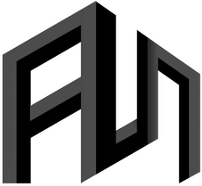

Sat2City v2Generating explicit, high-quality 3D city assets from a single satellite image is important for digital twins, urban simulation, and geospatial intelligence. Sat2City v2 advances the original Sat2City from a synthetic height-map-conditioned generator to a real-world, appearance-controllable satellite-to-3D asset framework. The key idea is to adapt a pretrained native structured-latent 3D foundation model to weakly aligned satellite-image and textured-mesh pairs collected from matched geographic bounding boxes.
We construct a dataset with 14,651 training and 1,590 held-out test satellite-mesh pairs across 24 regions in 9 cities. Sat2City v2 encodes each city mesh into a pretrained native 3D latent space, fine-tunes an image-conditioned shape-flow model, and uses the decoded shape as an anchor for satellite-conditioned texturing. The resulting pipeline produces reusable textured mesh assets instead of rendering-oriented 3D proxies.
Sat2City v1 supports synthetic data only; v2 learns from real satellite imagery and real-world city meshes.
In v1, appearance is generated randomly; v2 conditions appearance on the input satellite image.
Increases resolution from 128 in v1 to 512 in v2, recovering finer city geometry and texture details.
@misc{hua2026sat2cityv2,
title={Sat2City v2: Native 3D City Asset Generation from a Single Satellite Image},
author={Hua, Tongyan and Wu, Dongli and Zhu, Jinjing and Ren, Yinrui and Hong, Zhongcheng and Chen, Ying-Cong and Xiong, Hui and Zhao, Wufan},
year={2026},
eprint={2606.24138},
archivePrefix={arXiv},
primaryClass={cs.CV},
doi={10.48550/arXiv.2606.24138},
url={https://arxiv.org/abs/2606.24138}
}|
AI4City Lab, HKUST(GZ)
|